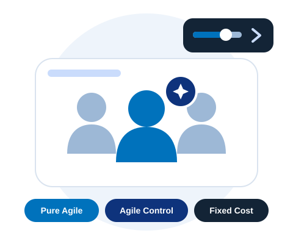

Delivery Models
Flexible delivery models: an end-to-end service or expert talent that joins your team, with an AI-powered Delivery Center.

Smart Factory
What we do
Software, QA & Testing and product support, end to end.
Outcome
Agility · Security · Efficiency · Digital acceleration

Delivery Center + AI
What we do
IT Staffing: we attract, assign and manage expert talent. You stay in control.
Outcome
Expert pool · Flexible hiring · C4E
Pure Agile · Maximum flexibility
Ideal when the product is evolving and led by the in-house team. No fixed scope · Dedicated teams · Dynamic backlog.
Agile Control · Control + flexibility
Ideal when there is partial scope with cost visibility. Fixed-time discovery · Re-estimation · Sprint by sprint.
Fixed Time and Cost · Maximum predictability
Ideal when the scope is clear and predictability is the priority. Fixed scope, price and timeline · Change control.
Specialist team · 20% task acceleration
Talent that joins your team · AI supervised by the specialist.
Engineering module · 30% across the lifecycle
100% of agreed technical KPIs · End-to-end delivery · Semi-autonomous AI · Dedicated project manager.
Our AI offering
- AI DiscoveryFrom idea to a solution with approved scope and budget.
- AI agent-driven developmentSpecialized agents produce code under human direction.
- Next-gen managed servicesFrom logging incidents to solving them before they happen.
- Industry AI agenciesBanking, insurance and retail, with regulatory expertise.
Innovation roadmap
- 1Level 1Supervised AIAI proposes, people approve.
- 2Level 2Semi-autonomous AIAI executes under continuous supervision.
- 3Level 3Controlled autonomous AIOptimizes speed, quality and cost.
Softers: people and agents on a single platform
- CupidoProject manager · Project management
- ArquiArchitect · Architecture
- EpicúreoBusiness analyst · Business analysis
- MentorDeveloper · Development
- TakumiProcess engineer · Processes
- ApoloThe whole team · The whole lifecycle
The agent increases capacity; the person keeps the decision. Nothing is delivered without human review.
Unified AI platform
- AI resource catalog
- MCP server and telemetry
- Third-party connectors
- Claude models · GitHub Copilot
Governance and knowledge
- Effective, responsible and ethical use
- Knowledge management
- AI FinOps and shadow AI control
- Security
Services portal
- AI share of work
- Metrics by agent
- Team productivity
- Process gaps
